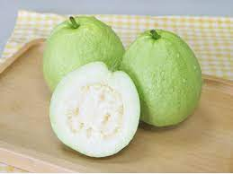
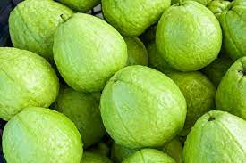

南部
|  |  |
熱量 :
125/個
水果介紹 :
桃金孃科，常綠多年生灌木植物，果實多籽，類似石榴。取其果實供食用，成熟時果皮黃中帶青色，果皮較粗糙，果肉卻細嫩腍滑，中心部分有很多細核，不易消化、故凡容易便秘的人皆不宜多吃芭樂。但另一方面，芭樂對大腸有收斂作用，可治腹瀉。芭樂有圓形和葫蘆形品種，顏色也有粉紅的和白色兩種。一般以紅肉的較好吃。至於品種方面，以葫蘆外形的食味較濃香。
營養成分 :
維生素C、鉀、鎂、磷
如何挑選 :
購買芭樂時，要表皮光滑無碰損斑痕的，皮色黃中帶綠的為上品。太生的果實色綠且堅硬非常，食味略苦澀，但啖來爽脆有聲，果心較小。太熟果實觸摸時腍軟，易咀嚼但果心也較大。芭樂最宜食用的是在大半熟程度，不但香味濃郁，肉質也嫩滑得多。
小秘訣：芭樂成熟後很易變壞，須立即食用，果實碰損的地方往往是變壞的缺口。腐壞的芭樂表皮有黃褐色斑點，果皮很易剝落。除此之外，芭樂也容易蛀蟲，往往外表無恙，但果心有蟲蛀；吃用時須加留意。